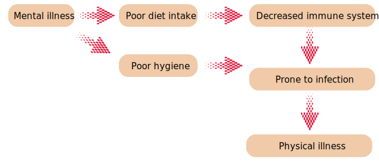
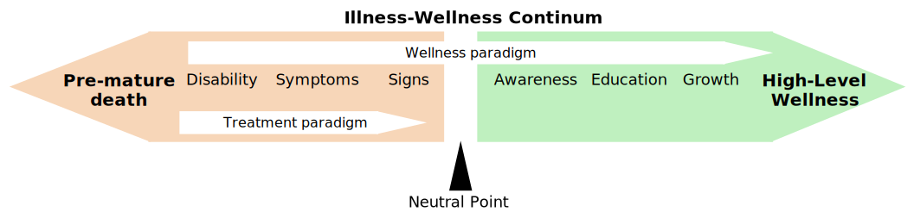

Well being
Definition of health:
- "Health is a state of complete physical, mental and social wellbeing and not merely an absence of
disease or infirmity." - W.H.O (1948)
- "Health is the condition of being sound in body, mind and spirit, especially freedom from physical
disease or paing." - Webster
Wellness:
- An integrated method of functioning which is oriented toward maximizing the potential of which the
individual is capable.
OR
an active process by which an indidual progresses towards maximum potential possible, regardless
of current state of health.
Illness:
- A highly personal state in which the person feels unhealthy, may or may not related to disease.
Concept of health:
- Biomedical concept
- Ecological concept
- Psychosocial concept
- Holistic concept
Biomedical concept:
- Traditionally, health has been viewed as an "absence of disease" and if one is free from
disease, then the person is considered healthy. This concept is known as the "biomedical
concept".
- MIRCO-ORGANISM → enters → HUMAN BODY → causes →
ILLNESS/DISEASE
Ciriticsm of biomedical concept:
- According to biomedical concept, one factor i.e. gern is responsible for illness, but other
factors which contirbute to the illness are not considered.
- But it has been seen that some of the health problems such as accidents, nutritional deficiency
disorders, mental disorders, disease due to environment pollution also occur. Even germs also
get an opportunity to multiply and thereby cause disease, it get appropriate environment inside
the body to grow.
Ecological concept:
- The ecologist put form an attractive hypothesis which viewed health as a dynamic equilibrium
between man and his environment.
- The ecological cocept raises two issues:
- Imperfect man
- Imperfect environment
- So in the view of ecologists health problems occur due to environment pollution or mans
maladjustment or imperfect man environment.
Critisim of ecological concept:
- Ecologists have considered the external environment of human beings but internal environment is
also responsible for disease.
- E.g.: Genetic inheritance, Hemophilia, Mental retardation.
Psychosocial concepts:
- Health is not only a biomedical phenomenon, but one which is influenced by social,
psychological, cultural, economic and political factors of the people concerned.
Holistic concept:
- The holistic model is a synthesis of all the above concepts.
- It recognized the stronger of social, economic, political and environmental influences on
health.
- The holistic approach implies that all sectors of society have an effect on health in
particular, agriculture, animal husbandary, food, industry, education, housing, public works,
communications and other sectors.
- The emphasis is on the promotion and protection of health.
Dimensions of health
- Physical
- Mental
- Social
- Spiritual
- Emotional
- Vocational
Physical Dimensions
- Physical health means perfect functioning of the body in which each organ is
working in harmony with the maximum capacity.
- Physical health is achieved by the exercise, healthy diet, adequate rest and sleep
and no smoking or alcohol intake.
- To maintain proper physical health there is need for taking safety precautions, and
regular follow up with the health care providers.
- Signs of physical health:
- A good complexion
- A clean skin
- Bright eyes
- Not too fatty
- A sweet breadth
- A good appetite
- Sound sleep
- Regular activities of bowels and bladder
- Smooth, easy, and coordination bodily movements
Mental Dimensions:
- Mental health is a state of balance between body and mind. Earlier the body and mind were
considered two separate entities.
- But these are interrelated as phsycial illness can result mental illness and vice versa.
- How mental illness influence physical health:

Characteristics of mentally healthy person:
- Mentally healthy person will be capable of making personal and social adjustment.
- Mentally healthy person is free from internal conflicts.
- He faces problems and tries to solve them intelligently.
- He has good self control balances rationally and emotionally.
- He knows him self his needs problems and goals.
- He has strong sense of self esteem.
- He serves for identity.
- He lives a well balanced life means able to maintain the balance between work, rest and
recreation.
Social Dimensions
- An individual is socially healthy if he is able to maintain harmonious relationship with other
members of society in which he lives.
- Social health rooted in "positive material environment" and "positive human environment" which
is concerned with the social network of the individual.
- The social dimensions of health includes:
- Communication
- Intimacy
- Respect
- Equality
- Social functioning
Spiritual Dimensions:
- Spirituality means in touch which deeper self and exploration the purpose of life, as people
believe in some force that transcend physiology and psychology of human beings.
- It includes love, charity, purpose, principles, ethics, intigrity, hope of life.
- Medications, prayers, or spiritual gatherings are organized to maintain spiritual health.
Emotional dimensions:
- Emotional health is closely related to the mental health and is considered as an important
element of health.
- Mental and emotional aspects of health are now viewed as two separate entities for human life.
- Cognition is related to the mental health whereas emotional health is related to the feelings of
a person.
- Emotional health includes:
- An emotionally healthy person has a positive thinking and is capable of coping and
ajusting self.
- An emotionally healthy person participates in all the activities which are related to
personal growth and his self esteem.
- Emotionaly well people has the ability to express feelings freely and manage feelings
effectively.
- They are also aware of and accept a wide range of feelings in themselves and others.
Vocational dimensions
- The choice of profession, job satisfaction, career ambitions and personal performance are all
important components of this dimension.
- To be occupationally well, a person is ultimately doing exactly with what they want to do in
life and are comfortable with their future plans.
- Vocational dimension of health can be assesed by:
- Assessing the satisfaction level at job
- Facilities attached to the job
- Behaviour of the management and administrator and of colleagues at job.
Other dimensions:
A few other dimensions also suggested such as:
- Cultural dimensions
- Socio-economic dimensions
- Environmental dimensions
- Educational dimensions
- Nutritional dimensions
- Preventive dimensions
Determinants of health
- Health is always under the influence of various factors which interact with each other and determine
the health status of an individual, family and community. These factors are known as determinants of
health.
- These are categorized as:
- Human biology
- Environment
- Life style
- Health and health allied resources
Human biology
It is one of the intrinsic determinant of health. It includes the factors such as:
- Genetic inheritance: Genetic inheritance
influences physical characteristics and intellectual
potentials of an individual. Person with desirable
physical characteristics and intellectual
potentialities receive positive interaction and re-
inforcement from people around them.
- Age: Age affects illness susceptibility as well as
behaviour. Infants and elderly persons are more
susceptible to infection
- Racial factor:It affect health
because of different culture values and attitudes e.g
sickle cell anemia is more common in Africans.
- Self concept: Self concept implies individual self
perception of his or her physical, intellectual and
social abilities.
Environment
- Environment is one of the extrinsic factor which
influence health and wellness of human beings it may
be referred to as micro and macro environment.
- Mirco environment: it refers to the personal
environment.
- Macro environment: it refers to the external
environment which is outside the home environment.
Components of environment
- Physical environment: The physical environment is comprised of housing and building structures
and wide variety of physical substances that affect health.
- Biological environment: The biological environment is comprised of plant and animal kingdom
which help in maintaining ecosystem and thereby health of individual.
- Social environment: The social environment includes other people and social institution,
sociocultural events, religious beliefs, moral and ethical values and social rules and
regulations.
Life style
- Life style refers to people way of living. It is composite of daily living activities,
behavioural and cultural practices including customs and traditions. Life style is acquired
through formal and informal education.
Health and health allied resources
It includes
- Health services: Health services are directly concerned with the
improvement of health status of people. If the health
services are available and accessible then it puts a great
impact on the health status of the community.
- Socio-economic condition: Socioeconomic condition have significant influence on
the community health. Socioeconomic condition
includes economic status, education, occupation and
living standard.
- The economic status is determined by the per capita
gross net production. The increase in GNP will improve the
economic status of the country and of people.
- Education play a important role in health promotion. The
educated person will understand to adopt a life style which
is suitable to his/ her health.
- Occupation contributes to health
promotion. It keeps the individual
busy less chances are there to get
unhealthy life style.
- Political system: The political system has A very strong role in health
promotion of people. Decisions pertaining to health
policy, allocation of funds, programmes, infrastructure
and delivery of health services are made by the ruling
party.
- Health related services: The health related services include education, food and
agriculture, industry, rural and urban development,
social welfare manpower development,
communication and transportation etc.
Characteristics of perfectly healthy person
- Healthy and Thick Hair:
Thin, branched, dry hair can be a marker of health problems, such as
thyroid deficiency, stress, and malnutrition. Conversely, healthy hair is
also a healthy indicator of the body. "Hair is a barometer of health in
general
- Strong Nails: Another window to an individual's health is on every fingertip, exactly
nails. "Nails are a perfect reflection of health.
Stress can affect the nails, hair, and signals from problems throughout the
body. For example yellow nails.
- Healthy Teeth and Gums:
Oral health is also a health barometer. Strong teeth with pink gums is a
healthy indicator of the body. Like other areas of the body, the mouth is a
nest of bacteria, though many are harmless. But if oral hygiene is not
maintained, the bacteria could become dangerous because it can cause
mouth infections, porous teeth, and gum disease.
- Body Mass Index is Balanced:
Body mass index (BMI), is a measure of weight and height ratio as well as
being a pointer to when there is excess fat. People whose BMI is less or
more than the prescribed number may experience so many problems.
- Enough sleep: We must know that sleep deprivation is bad for health and can trigger diabetes,
weight gain, and heart disease.
- Social Interaction: The results mentioned that having many friends, support from social
networks, and interaction with others is very good for health, not just
mental health, but also physical.
- Healthy Diet: Regular consumption of fruits and vegetables can lower blood pressure,
heart disease and stroke risk, prevent some types of cancer, reduce the
risk of eye problems and digestion, as well as maintaining blood sugar
levels.
- Others are:
- Is free from sickness and disease
- Shows no unnecessary anxiety
- Has self-confidence
- Has organs and organ system which are healthy and function properly
- Is free from social and mental stres
Health promotion
- At the beginning of the 20th century, a new concept, the concept of health promotion began to take
shape. It was realized that public health had neglected the citizen as an individual and that state
had a direct responsibility for the health of the individual.
- Definition: Health promotion is the process of enabling people to increase control over and
to improve health. It is not directed against any particular disease, but is intended to strengthen
the host through a variety of approaches.
- Goals of health promotion: To create environments that allow all the ability to access all
needed services.
To equip with the skills to determine their own health needs.
- Interventions area in health promotion:
- Health education
- Environmental modifications
- Nutritional interventions
- Lifestyle and behavioural changes
Health education
- This is one of the most cost-effective interventions. A large number of diseases could be
prevented with little or no medical intervention if people were adequately informed about them
and if they were encouraged to take necessary precautions in time.
- The targets of educational efforts may include the general groups, health providers, community
leaders and decision-makers.
Environmental modification
- A comprehensive approach to health promotion requires environmental modifications, such as
provision of safe water, installation of sanitary latrines, control of insects and rodents,
improvement of housing etc.
- The history of medicine has shown that many infections diseases have been successfully
controlled in many countries through environmental modifications.
Nutritional intervention
- These comprise food distribution and nutritional improvement of vulnerable groups: child feeding
programmes, food fortification, nutritional education.
Life style and behavrioural changes
- The efforts are directed towards discouraging from adopting harmful lifestyles eg. smoking,
eating patterns, lack of exercise, alcoholism etc.
Maintenance of health
- Nutrition
- Exercise
- Hygiene
- Reduce stress
- Safe environment
Health Illness continum
- The health illness continum is a graphic illustration of a well being, concept first proposed by
John W Travis in 1972.
- It describes how wellbeing is more than simply an absence of illness, but also incorporates the
individuals mental and emotional health.
- Travis believed that the standard approach to medicines, which assumes a person is well when there
are no signs or symptoms of disease, was insufficient.

- Composed of two arrows pointing in opposite direction and joined at a neutral point.
- Movement to the right to the arrows (toward the high level of wellness) equals an increase in
level of health and wellbeing. Achieved in three steps:
- Awareness
- Education
- Growth
- Movement to the left to the arrow (towards pre-mature death) equates a progressively
decreasing state of health. Achieved in three steps:
- Signs
- Symptoms
- Disablity
- Most inportant is the direction is the individual facing on the pathway:
- If towards high level of health, a person has genuinely optimistic or positive out look
despite his/her health status.
- If towards premature death, a person has a genuinely pessimistic or negative out look about
his or her health status.
Compares treatment model with a wellness model
- If treatment model is used, an individual can move right only to the neutral point.
Eg; A hypertensive client who only takes his medications without making any other life style
changes.
- If wellness model is used, an individual can move right past the neutral point.
Eg: As hypertensive client not only takes medications but stops smoking, looses weight,
starts an exercise programme etc.
Health Assessment
- Assessment is defined as a systematic, dynamic process by which the nurse through interaction with
client, significant others and health care providers, collects and analyze data about the client.
Purpose of health assessment
- To establish a data base of client's normal abilities, risk factors that can contribute to
dysfunction and any current alteration in function.
- To get a clear picture of a client's health status and health related problems.
- To identify cause and extent of disease.
- To identify the problems at early stage.
- To determine the nature of treatment required for the client.
- To get a holistic view of the client.
- To contribute in medical research.
- To identify client's strength, weakness, knowledge, attitude, movitivation, support systems and
coping skills.
- To compare clients health status with a ideal status.
Terminologies
- Diagnosis: It is the determination of the nature
and extent of a disease.
- Prognosis: It is the forecast of the course and
duration of a disease.
- Etiology: - It is the science of the cause of a
disease.
- Signs: The presence of a disease that can been
seen or elicited E.g. Fever.
- Symptoms: - Any evidence as to the nature and
location of a diseases noted by the client.
- Subjective symptoms: When the symptoms are note by the client himself. E.g. Pain.
- Objective symptoms: When the symptoms are noted by the observer as well as by the client.
E.g. Jaundice.
Health history
- It is a collection of subjective data in detail regarding client's health in a chronological
order.
Factors affecting the collection of subjective data:
- Physical setting
- Client's personality and behaviour
- Nurses personality and behavior
- Communiaton skill
- Patient's problem
Format of health history
- Biographic data: Name, address, gender, age, marital status, occupation, religion, family income
(monthly), educational qualificaiton etc.
- Chief complaints: It is a brief assessment of client's problem for which clients seeks medical
care.
It should be written in clients statement.
- History of present illness: Signs and symptoms, duration, treatment taken (if any), other
complaints such as loss of appetite, insomnia, disorders of stomach etc. Client's health habits
- eating, sleeping etc.
- Past health history: childhood illness, allergies, medical disease, surgery, hospitalization,
obstetric history.
- Family history: family tree, information about family memers, family history of any illness.
- Occupational and environmental history: collecting data regarding clients job, nature of job,
environment in job, exposure to any hazardous substances if any?
- Psychosocial history: Smoking, food habits, likes and dislikes, pattern of sleep, exercises.
- Review of systems: Information is gathered system wise.